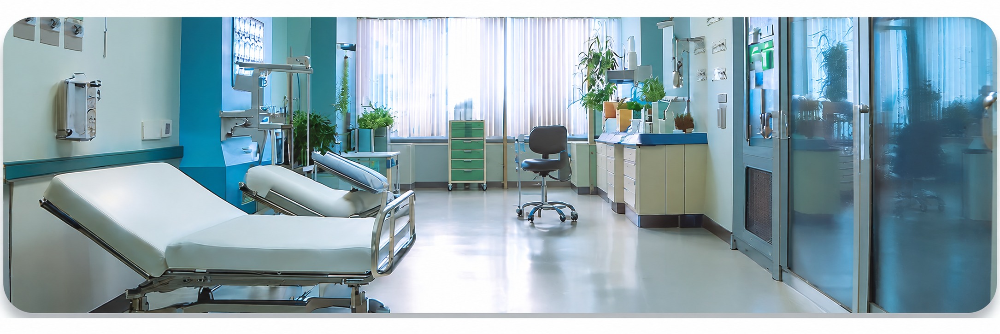

一般内科診療
風邪や発熱、喉の痛み、頭痛、腹痛などの症状を中心に、一般的な体調不良の診療を行っています。また、原因不明の不調や軽い症状であっても、早期診断に努めております。

風邪や発熱、喉の痛み、頭痛、腹痛などの症状を中心に、一般的な体調不良の診療を行っています。また、原因不明の不調や軽い症状であっても、早期診断に努めております。
高血圧症、糖尿病、脂質異常症（高コレステロール血症）、メタボリック症候群など、生活習慣病の診断と治療を行います。病気の進行を予防し、健康維持のための生活指導や薬物療法を行います。

胃痛、胃もたれ、胸やけ、便秘、下痢などの消化器系の不調に対応しています。必要に応じて胃カメラや超音波検査などを実施し、胃腸の健康をサポートします。
咳、息切れ、胸の痛みなど、呼吸器系の症状について診療を行っています。季節性の喘息やアレルギー性鼻炎、慢性閉塞性肺疾患（COPD）などにも対応し、適切な治療と予防をサポートします。
定期健康診断をはじめ、血液検査、尿検査、心電図、超音波検査、レントゲン検査などを行い、病気の早期発見と予防に努めます。異常が見つかった場合は、経過観察や専門治療へとつなげてまいります。
インフルエンザや肺炎球菌などの各種予防接種を行っています。定期的な接種で感染予防と体調管理を支援いたします。予防接種は予約制となりますので、事前にお問い合わせください。
禁煙をご希望の方に、禁煙治療とサポートを行っています。必要に応じて、ニコチン依存症の治療薬を使用し、無理なく禁煙が継続できるようお手伝いいたします。